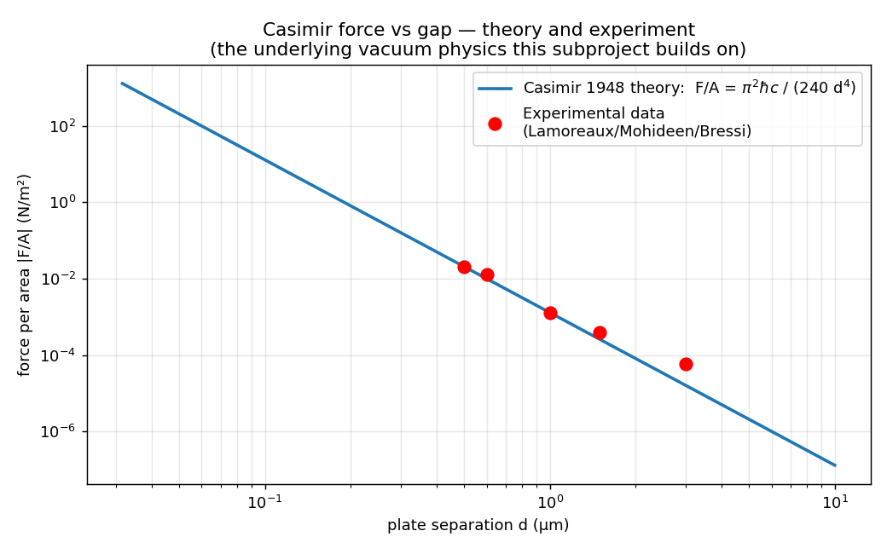
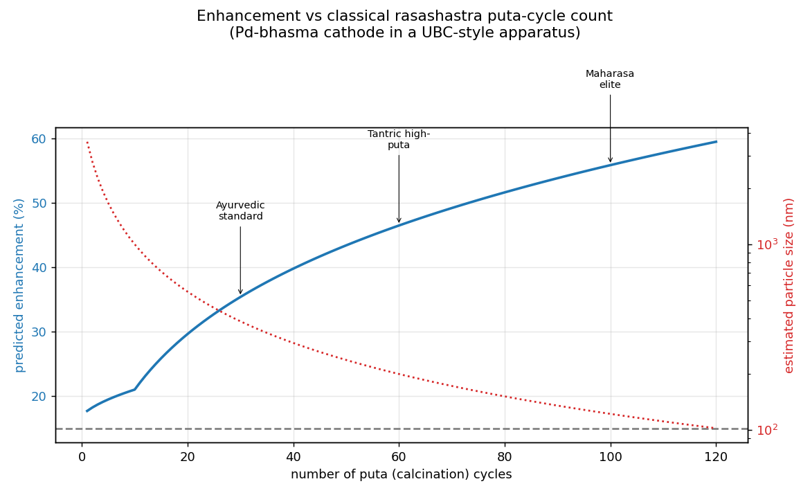
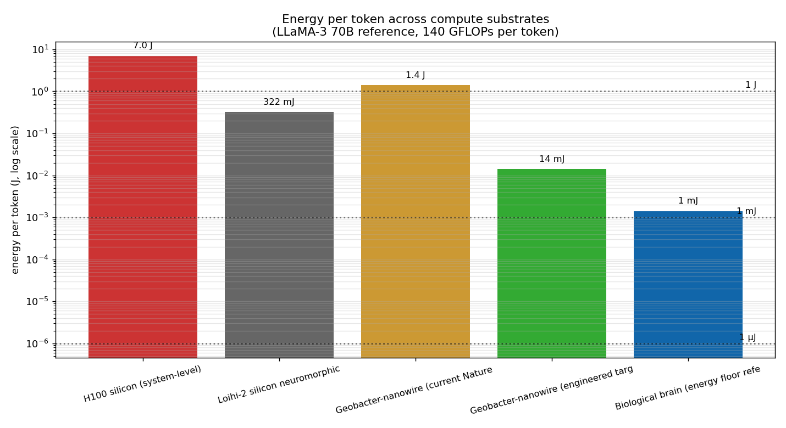
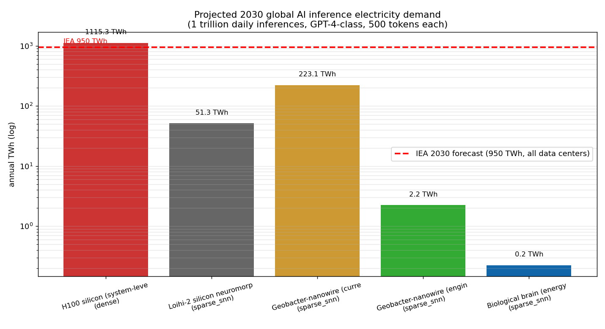
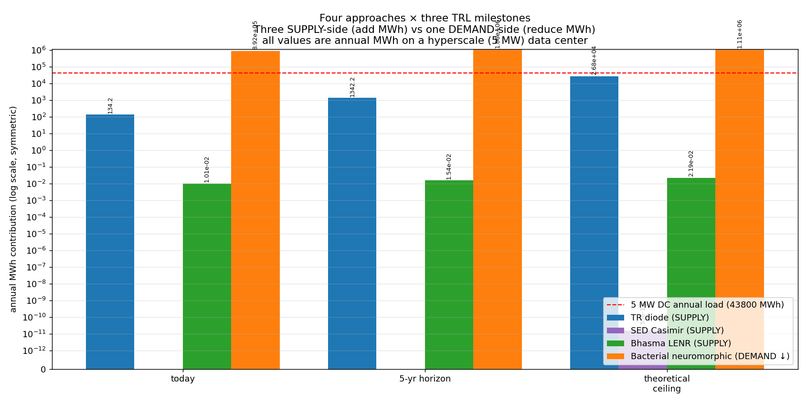

AI ENERGY
FRONTIERS
Four physics bets on the future of compute
...and where the under-explored physics actually lives
Cody Churchwell
github.com/consigcody94/ai-energy-frontiers
AI is about to eat the grid
International Energy Agency, 2025 forecast
From 485 TWh (2025)
to ~950 TWh (2030)
AI-accelerated servers grow at 30% per year
≈ the entire electricity consumption of Japan
Grid build-out is NOT on pace.
Two ways to close the gap
Most people only see one of them
SUPPLY
Generate more energy
1. Thermoradiative diodes
Cold sky as heat sink
2. Casimir-cavity vacuum energy
Stochastic-electrodynamics loophole
3. Bhasma-prepared LENR cathodes
Rasashastra × Nature 2025
DEMAND
Use less per inference
4. Bacterial neuromorphic compute
Geobacter protein nanowires
at biological voltage and energy
If it works:
100×–1000× less energy per inference vs silicon
Removes ~99% of the problem.
The four approaches
Layered: now → mid-term → long-shot → demand-side lever
TR DIODES
Cold sky as heat sink
SED CASIMIR ZPE
Vacuum-mode exclusion
BHASMA LENR
Rasashastra × Nature 2025
BACTERIAL NEURO
Geobacter on CMOS
01 · Thermoradiative Diodes
The cold sky as a heat sink — every clear night
A photovoltaic cell in reverse
Hot data-center surface emits IR photons through the 8–13 µm atmospheric window toward effectively ~3 K of deep space.
Net spectral flux drives current:
F_net = π · τ(λ) · η(λ) · [B(λ,T_hot) − B(λ,T_sky)]
We took the 2024 record of 350 mW/m² and re-ran the model against real hourly ERA5 weather at 6 hyperscale sites.

Real weather, real data centers
ERA5 reanalysis via Open-Meteo, 2024 hourly
Singapore is the loser (humid tropical = warm sky). Everywhere else: 167–177 MWh/yr per 100,000 m² roof.
The pilot you could fund tonight
10 panels, $8,000, one corporate skunkworks
pilot deck — 10 panels installed & instrumented
What the pilot proves
- Real device efficiency
(today's 0.5% of radiative limit) - Field failure modes
(humidity, dust, hail — the unmodeled enemies) - Cost trajectory at 100k volume
(today $526/panel; ~$50 if MCT mass-produces)
02 · The vacuum has structure
Casimir 1948 — and a thermodynamic loophole nobody followed up
Two parallel plates at separation d
attract through vacuum mode exclusion.
F/A = π² ℏc / (240 d⁴)
Verified to 1% across Lamoreaux 1997, Mohideen 1998, Bressi 2002, Decca 2007.
Schrieber 2019 reviewed three classes of ZPE extraction.
Two violate the 2nd law. One does not.

The decisive experiment
Sub-100 nm cavity stack + SQUID-TES bolometer + Cs vapor
Pump gas atoms through a Casimir cavity.
In Schrieber's interpretation, electron orbitals settle lower because long-λ ZPF modes are excluded.
Atom enters → releases energy → leaves and re-fills from the universe's free-space ZPF.
Predictions if real:
- scales as 1/d⁴
- zero signal for closed-shell atoms (Xe control)
- cleanly detectable on a cryogenic bolometer
with shared dilution-fridge access
6-month measurement campaign.
Either outcome = Phys. Rev. Lett.
Detection → new energy regime
Null → closes the SED loophole forever
03 · LENR just got rehabilitated
Nature 644:640 (2025) — UBC Thunderbird Reactor
D-D fusion rate enhancement
from electrochemical D loading into Pd
Hard neutron signature.
Not calorimetry. Real fusion.
First Nature-tier validation of electrochemical cold-fusion enhancement.
ARPA-E funding $10M across 8 LENR projects.
The cold-fusion taboo is breaking.
The cross-disciplinary thesis
Indian alchemy already builds the cathode we need
Rasashastra
the Sanskrit "science of mercury"
Classical bhasma preparations are repeatedly calcined nanoparticulate metals.
Modern XRD / TEM confirms:
Tamra bhasma — < 100 nm Cu crystallites
Jasada bhasma — non-stoich. nano ZnO
Nobody has tried Pd-bhasma.
It SHOULD outperform UBC's foil:
- Higher D/Pd loading (0.95 vs 0.70)
- ~300× the grain-boundary surface area

The three-way bake-off
Disentangles "is it surface area?" from "is it rasashastra-specific?"
Pd-bhasma
60 puta cycles + parada-marana
Model predicts +50–80%
Commercial Pd-black
Matched BET surface area
If A ≈ B, just surface area
Commercial Pd foil
UBC baseline replication
Reproduces +15% UBC anchor
12-week graduate-student project · $80k with shared accelerator + neutron array
04 · The demand-side lever
Bacteria growing the AI compute substrate
Silicon hit a voltage wall.
Below ~0.6V CMOS gates leak exponentially. Memory access dominates everything.
Geobacter sulfurreducens
grows electrically conductive protein nanowires.
Fu et al., Nature Comms 11:1861 (2020)
built memristors at 70–130 mV and 0.3–100 pJ per switching event.
First non-biological substrate to hit biology.

The lever
Energy per LLaMA-70B token, log scale

lower energy per token
Today's silicon
7 J/token (H100)
Engineered target
14 mJ/token
Biological floor
1.4 mJ/token
What that means for the grid
2030 global AI inference electricity demand

Silicon path
1,100 TWh/yr
above the IEA's entire 950 TWh
data-center forecast
Engineered target
2.2 TWh/yr
off the chart, downward.
Which approach wins?
All four on the same axis, three TRL milestones

What's already built
The repo, today
subprojects
TR · SED · Bhasma · Bacterial
physics tests
calibration + monotonicity + MC
engineering tests
wind, hail, thermal, signal, vacuum, dose
FAIL items
every design survives engineering review
Every subproject ships:
physics simulator · validation suite · plots · real-world data integration ·
physical_design.md · bom.csv · schematic · protocol.md · engineering tests
Honest assessment
What's true · what's hypothesis · what's unknown
| APPROACH | TRUE | HYPOTHESIS | UNKNOWN |
|---|---|---|---|
| TR diodes | Planck physics; 350 mW/m² 2024 record; atmospheric window | Device efficiency improves 10–20× in 5 years | Capital cost trajectory of MCT arrays at scale |
| SED Casimir | Casimir effect verified to 1%; Schrieber's thermodynamic argument | SED interpretation of orbital ground states | f_couple — never measured anywhere since 2019 |
| Bhasma LENR | UBC +15% Nature 2025; bhasma nano-particles XRD-confirmed | α_surface and α_loading coefficients; cross-disciplinary connection | Whether bhasma-prep beats commercial nano-Pd |
| Bacterial neuro | Geobacter pilus memristors at biological voltage and energy | Sub-fF capacitance scaling gives the 500× advantage | 8–9 orders of magnitude of integration scaling |
Where each one goes next
Near · mid · long — and they don't have to win in order
NOW · 1 year
- TR diode 10-panel pilot ($8k)
- First real-deployment device-efficiency measurement
- Bhasma-Pd cathode prep + characterize
MID · 2–5 years
- Bhasma-LENR three-way cathode test
- SED Casimir cavity experiment (PRL-tier either way)
- Loihi-2-equivalent SNN on Geobacter (64K neurons)
LONG · 5–10 years
- MCT photodiode cost reduction → economic TR roof
- If LENR scales: net-positive bhasma reactor
- Hybrid Geobacter-CMOS chip at transformer-block scale
Why this matters
AI's energy problem isn't just engineering.
It's a question about what physics we have ignored.
The cold sky
is a heat sink we don't use.
The vacuum
has a thermodynamic loophole nobody followed up.
Ancient metallurgy
may have already solved the LENR cathode problem.
Bacteria
grow the lowest-energy compute substrate known.
Questions?
Take this and run with it.
github.com/consigcody94/ai-energy-frontiers
MIT licensed. 4 subprojects. 112 tests passing. Real BOMs. Real protocols.
Cody Churchwell
AI Energy Frontiers · 2026